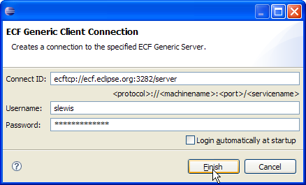

|
New ECF UI Extension Points
|
There are two new ECF UI extension points: org.eclipse.ecf.ui.configurationWizards and org.eclipse.ecf.ui.connectWizards.
These two extension points allow provider implementations to specify wizard user interfaces for the creation/configuration and connection
of ECF IContainer instances.
Here's an exmample of using the org.eclipse.ecf.ui.connectWizards extension to supply a connect
wizard for a given container type name. The following would be placed in your plugin's plugin.xml:
<extension
point="org.eclipse.ecf.ui.connectWizards">
<wizard
class="org.my.client.MyClientConnectWizard"
containerFactoryName="org.my.client"
id="my.client.connect.wizard"
name="My Client Connect Wizard"
icon="icons/connect.png">
</wizard>
</extension>
Note the containerFactoryName ("org.my.client"). This value must match the name of the provider container factory registered under the org.eclipse.ecf.containerFactory
extension point. The specified class ("org.my.client.MyClientConnectWizard") must implement the org.eclipse.ecf.ui.IConnectWizard interface.
Clients can then display this wizard using the following:
ConnectWizardDialog cwd = new ConnectWizardDialog(window.getShell(),
window.getWorkbench(), new ContainerHolder(container,
ContainerFactory.getDefault().getDescriptionByName("org.my.client"));
cwd.open();
Where the container is a non-null IContainer instance to connect.
Here's a wizard used for the generic provider:

Also see the documentation for both extension points in the Eclipse help under ECF Programmers Guide -> Reference -> Extension Points
|